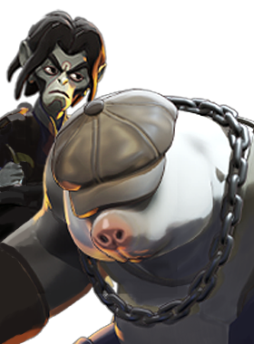

Scorn
Deal damage to nearby enemies and heal yourself based on the damage done. Heal is stronger against enemy heroes. Can be cast while burrowed or during Combo.

Everyone has a plan until they're grabbed by a mole man.
Deal damage to nearby enemies and heal yourself based on the damage done. Heal is stronger against enemy heroes. Can be cast while burrowed or during Combo.
Burrow underground, moving faster and gaining spirit and bullet armor. Damage from enemy heroes reduces the speed bonus. When you jump out, deal spirit damage, slow, and knockup enemies in a spin attack.
Spray sand that disarms enemies in front of you and deals damage. A fast-moving cylindrical projectile that applies its effects on hit.
Hold the target in place, stunning them and dealing damage during the channel. If they die during, or within 3 seconds of Combo ending, you permanently gain max health.
Mo and Krill are members of The Tunnel Rats, a group that help facilitate illicit trade and commerce between the boroughs thanks to a network of underground tunnels. But while most denizens of the New York underworld respect the work The Rats do, every once in a while a gang tries to exploit the tunnel system for personal vendettas… that's when Mo and Krill step in and remind the city what happens to those who disrespect their hospitality.